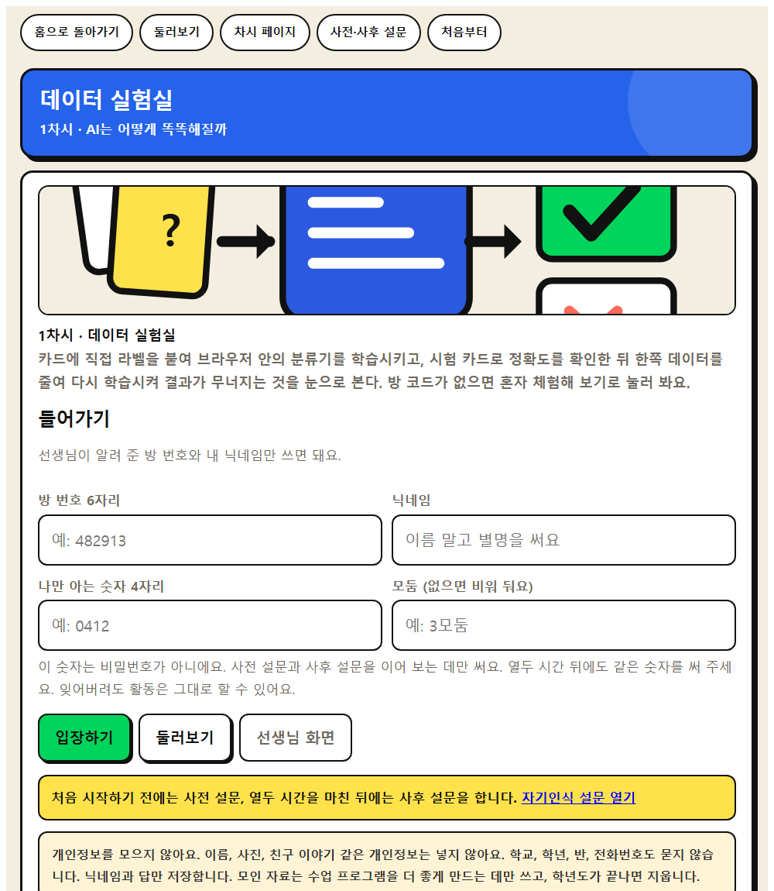
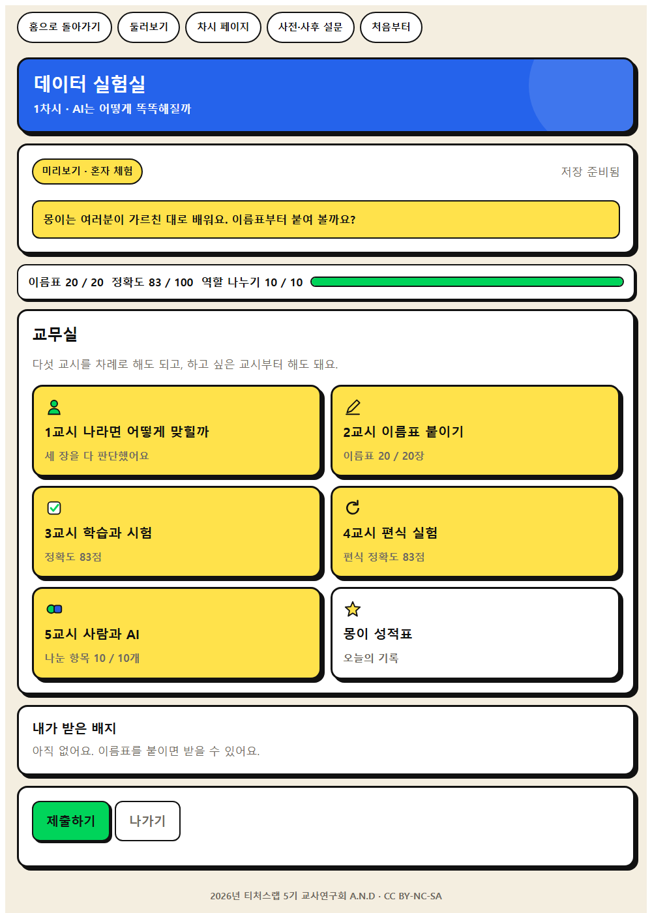
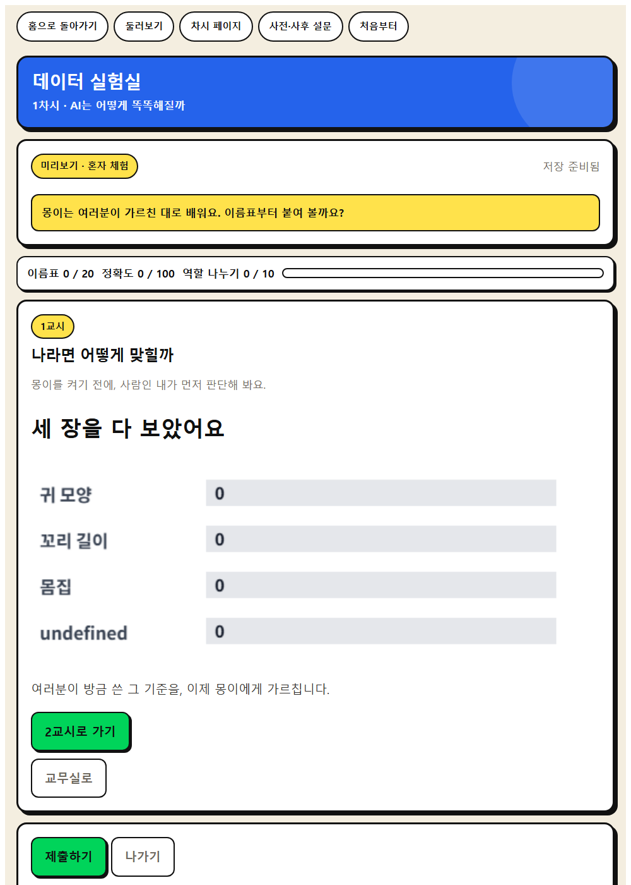
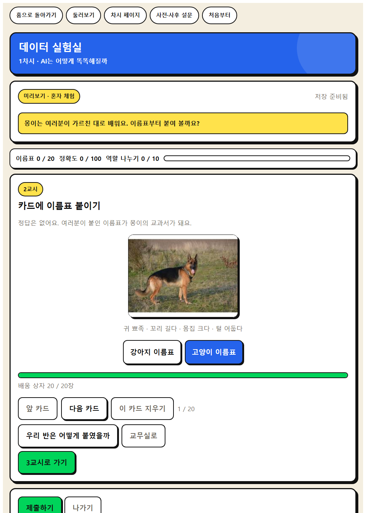
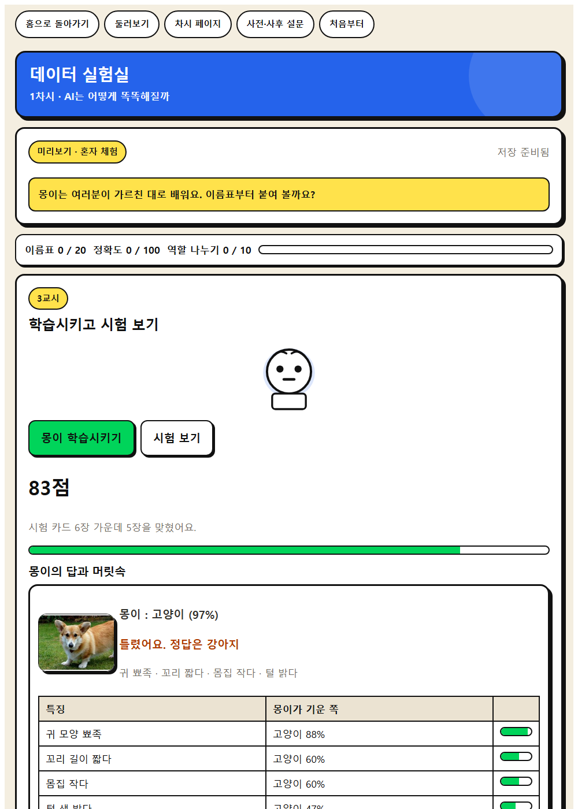
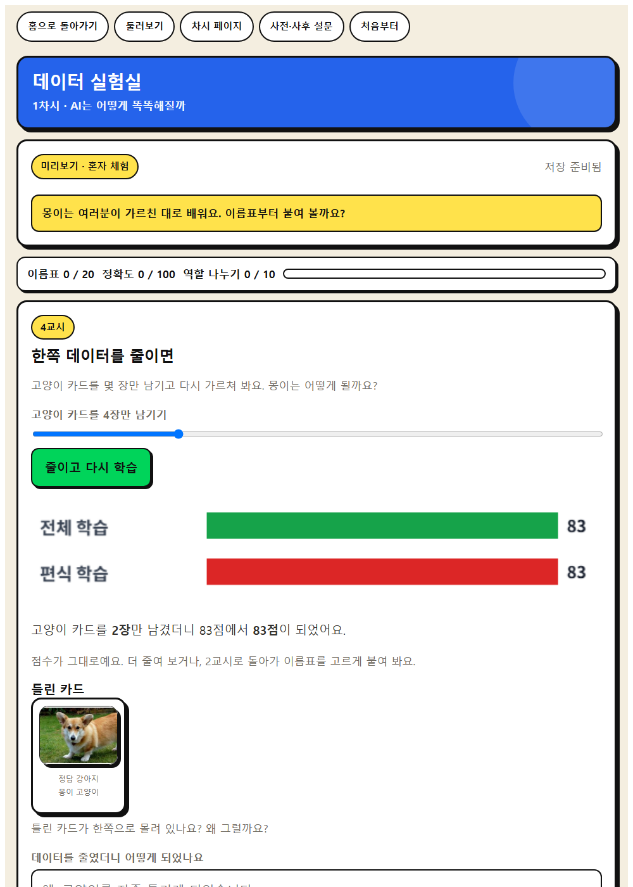
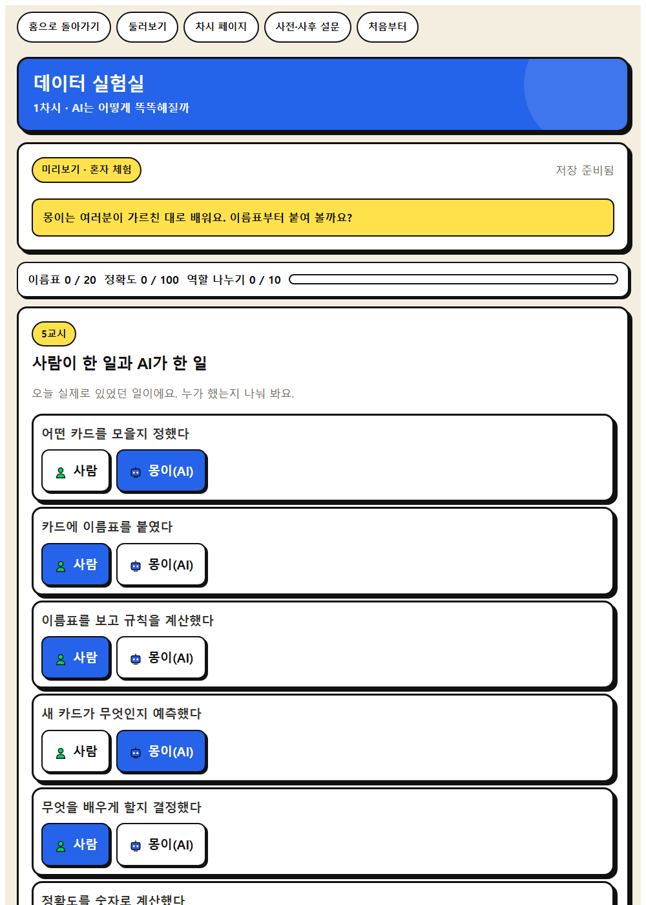

인간중심 사고를 기르는 AI적정활용 수업 WISE · 모듈1 WISE 발견
01
AI가 어떻게 배우는지 알아보고, AI가 우리의 생각을 도와주는지 대신해 주는지 생각해 봅시다.
오늘의 학습 문제
AI는 내 생각을 도와주는가, 아니면 대신해 주는가
오늘 기르는 힘
내가 넣은 데이터에 따라 AI의 분류 결과가 어떻게 달라지는지 관찰·분석하기
AI로 해결할 수 있는 문제를 찾고, 데이터를 모아 해결 절차를 구상하기
⑤ 비판적 AI 리터러시와 검증 가능성
도입 · 5분
도입 · 동기 유발
(동물 사진) 컴퓨터에게 강아지인지 고양이인지 물으면 정확히 맞힐 수 있을까요?
‘인공지능은 어떻게 배울까’ 영상을 봅시다. 컴퓨터는 누구에게 배웠을까요?
도입 · 학습 문제 확인
AI가 어떻게 배우는지 알아보고, AI가 우리의 생각을 도와주는지 대신해 주는지 생각해 봅시다.
도입 준비물과 유의점
☆ 동기유발 영상
★ 학습문제 PPT
△ 티처스랩 ‘데이터로 세상 읽기’ 발췌
웹앱으로 합니다
카드에 직접 라벨을 붙여 브라우저 안의 분류기를 학습시키고, 시험 카드로 정확도를 확인한 뒤 한쪽 데이터를 줄여 다시 학습시켜 결과가 무너지는 것을 눈으로 본다.
선생님 화면 → 새 방 만들기 → 여섯 자리 방 번호를 칠판에 적습니다.
학생은 QR 을 찍거나 주소를 열고 방 번호와 닉네임을 넣습니다.

방 번호 여섯 자리와 닉네임만 넣습니다. 이름을 묻지 않습니다.
나만 아는 숫자 네 자리는 사전 설문과 사후 설문을 잇는 데만 씁니다.

웹앱 1단계
1단계 나라면 어떻게 맞힐까

웹앱 2단계
2단계 카드 20장에 라벨 붙이기

웹앱 3단계
3단계 학습시키고 시험 보기

웹앱 4단계
4단계 한쪽 데이터를 줄이면

웹앱 5단계
5단계 사람이 한 일과 AI가 한 일

웹앱 6단계
role
교사 화면
학급 평균 정확도, 데이터를 줄였을 때 평균 정확도, 라벨이 갈린 카드, 배움 문장 모음
결과 크게 띄우기를 누르면 학급 화면으로 함께 봅니다. CSV 로 내려받고, 수업이 끝나면 방을 잠급니다.
전개 · 30분
전개 · [활동 1] AI는 어떻게 배우는지 알아보기
AI에게 강아지와 고양이를 구분하게 하려면 사람이 무엇을 해 주어야 할까요?
머신러닝 체험 도구에 사진을 모으고 라벨을 붙여 봅시다. 이 사진을 무엇이라 부를까요?
전개 · [활동 2] 데이터로 AI 가르치기
모델을 학습시키고 새 사진으로 테스트해 봅시다. 한쪽 데이터를 적게 넣어 다시 학습시키면 어떻게 될까요?
AI를 똑똑하게 만드는 것은 누구일까요?
전개 · [활동 3] AI는 도우미일까, 대신해 주는 걸까
사람이 한 일과 AI가 한 일을 나누어 봅시다. AI는 도와주나요, 대신해 주나요?
전개 준비물과 유의점
☆ 머신러닝 체험 도구(엔트리 등)
★ 데이터 수집·라벨링 활동지
★ 웹앱 데이터 실험실
△ ‘데이터→결과 변화’ 발견에 초점
△ 개인정보가 담긴 사진은 쓰지 않도록 안내
정리 · 5분
정리 · 배움 정리
오늘 알게 된 점을 한 문장으로 말해 봅시다.
정리 · 다음 차시 예고
다음 시간에는 AI의 답이 늘 옳은지 확인해 봅시다.
정리 준비물과 유의점
★ 배움 공책
△ 사람의 판단 역할에 초점
오늘 쓰는 웹앱
카드에 직접 라벨을 붙여 브라우저 안의 분류기를 학습시키고, 시험 카드로 정확도를 확인한 뒤 한쪽 데이터를 줄여 다시 학습시켜 결과가 무너지는 것을 눈으로 본다.
선생님 화면에서 여섯 자리 코드를 만들어요.
코드와 비밀번호, 닉네임만 쓰면 돼요.
고쳐서 다시 제출해도 괜찮아요.
결과 크게 띄우기로 우리 반 결과를 봐요.
웹앱으로 40분 쓰기
활동지
기기가 부족해도 함께합니다
기기가 부족하면 교사 화면 하나로 함께 진행한다. 인쇄한 카드 20장에 모둠이 이름표를 붙이고, 교사가 앞에서 학습과 시험을 눌러 결과를 함께 본다.
지도 유의점
정확도 경쟁으로 흐르지 않게 한다. 틀린 까닭을 데이터에서 찾는 것이 목표다.
라벨이 갈린 카드는 누가 맞았는지 가리지 않고, 사람마다 다르게 볼 수 있음을 짚는다.
개인정보가 담긴 사진은 쓰지 않는다. 이 앱은 사진을 올릴 수 없게 만들었다.
오늘 여기까지
AI도 틀린다, 환각과 검증
2026년 티처스랩 5기 교사연구회 A.N.D · CC BY-NC-SA